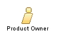

| Role: Product Owner |
 |
|
Relationships
 |
||
| Additionally Performs | ||
|---|---|---|
Main Description
O Product Owner tem as seguintes responsabilidades:
O Scrum Team e o Scrum Master analisa a priorização dos itens do Product Backlog, refina os itens a partir da prioridade e se compromete a finalizá-los durante o Sprint. Esses itens tornam-se parte do Sprint Backlog. |
Este programa e o material que o acompanha são disponibilizados sob a Copyright © 1998--2008 Mountain Goat Software. Todos os Direitos Reservados. |